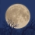
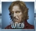
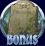
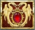

5-reel 20-line slots
The objective of the Full Moon Fortunes slot is to obtain winning symbol combinations by spinning the reels.
To play the game:
- Line bets are chosen by clicking + and – below Line Bet to increase or decrease the amount.
- The Full Moon Fortunes game is always played with 20 active paylines. The number of active paylines is fixed and cannot be changed by the player.
- Your total bet per game round equals your selected line bet multiplied by the number of active paylines. The total amount you have bet will be shown in the Total Bet box above the Auto Play button.
- Hover over a symbol on the reels to display the potential payouts for this symbol.
- Clicking Spin spins the reels with the current selection of lines and line bets.
- Reels can be spun automatically using the Auto Play function.
Click on the Auto Play button to display the list of options. Select the number of spins to be played automatically by clicking on it. This also starts the function. During Auto Play, the Auto Play button displays the number of spins remaining. The mode ends when the reels have been spun the number of times you have determined, when you do not have sufficient funds for the next spin, or when the Free Spins feature is triggered. You can end automatic spins early by clicking Stop Auto Play, located in the lower right-hand corner of the game window. - Clicking Turbo within the Auto Play options turns the Turbo Mode on or off. Turning it on speeds up the reel spins during Auto Play.
- Wins are calculated according to the paytable. Your line win will equal your line bet multiplied by the corresponding value according to the paytable. The paytable can be accessed via the Info page, on the Payouts screen.
- On a given payline, only the highest payline winning combination pays. Simultaneous winnings on different paylines are accumulated.
- In case of a winning spin, the Win field at the bottom of the game window displays the accumulated winnings.
Info pages:
- Clicking Info opens the reference screens describing different game components. Clicking the << and >> buttons in the lower right-hand corner of the screen enables navigating between the different screens. Another way of switching between the screens is by clicking on the buttons with page names in the upper part of the window.
- The Payouts screen shows all winning combinations (the “paytable”).
- The Full Moon screen explains the Full Moon feature.
- The Free Spins screen describes the symbol combination necessary to trigger the feature and explains its rules.
- The Paylines screen illustrates all possible paylines and explains the rules for calculating their wins.
- Clicking Back to Reels exits the reference screen and returns to the game.
Paylines:
- Paylines are represented by lines that appear over the reels. All 20 paylines are illustrated on the Paylines page.
- All 20 paylines are always active and can register wins.
- There is a difference between the line bet and the total bet. The line bet shows how much is being bet on a single payline. The total bet shows how much is being bet in total on the game round. Payouts shown in the paytable (on the Payouts page) are multiplied by the line bet.
About payouts:
- Payouts are listed in the paytable on the Payouts screen. To find the possible win amount, the line bet must be multiplied by the payout.
- If two payline winning combinations occur on the same line, the higher of them is paid out. If more than one active payline has a winning combination, the winnings are accumulated.
- Winning combinations must start from the left most reel, and the symbols have to be consecutive.
Maximum Win Limit
The maximum win in the game has an upper limit. For more information, see the Terms and Conditions section.
Wild Symbol
The Wild symbol can stand for any other symbol, except for the Full Moon Scatter and Free Spin Bonus scatter symbols, to make the best possible winning combination. There is also a separate payout for 3 or more Wild symbols on an active payline, as seen in the paytable. This is paid out instead of the regular symbol win if the win amount from Wilds is larger than the win from the regular symbols (in winning lines where the Wild is standing in for other symbols).
Full Moon Scatter Symbol
The Full Moon Scatter symbol  appears on reel 5 during the main game only. When it appears, all Dr Blackwood symbols currently on the reels are turned into Multiplier Wild symbols . More information on the Multiplier Wild symbol can be found below.
Multiplier Wild Symbol
The Multiplier Wild symbol can substitute for any other symbol except for the Full Moon Scatter and Free Spin Bonus scatter symbols, to make the best possible winning combination. In addition, line wins resulting from a combination in which the Multiplier Wild symbol participates are multiplied by the value shown on the symbol. The multiplier value awarded is random and can be from x1 to x5.
Note: All symbols count up to the same multiplier value. If there are 2 or more such symbols, their multiplier values are not added up. For example, if on a winning payline there are 3 symbols with a multiplier value x2, the line win will only be multiplied by x2.
Note: When not substituting for any other symbols, symbols pay out as multiplied Dr Blackwood symbols.
Free Spin Bonus Symbol
3, 4 or 5 Free Spin Bonus scatter symbols  appearing simultaneously anywhere on the reels during the main game trigger the Free Spins feature.
More information on the Free Spins feature can be found here.
Stacked Symbol
The Dragon Jewel symbol  is stacked on all reels. This means that Dragon Jewel symbols appear one above the other on the reels, thus making higher payouts possible.
Full Moon Feature
The Full Moon feature is triggered when the Full Moon Scatter symbol appears on reel 5 during the main game as explained above in the Full Moon Scatter Symbol section.
The Free Spins feature will have a different number of free spins and a different win multiplier depending on the number of symbols that have triggered it.
| Number of symbols triggering Free Spins | Initial number of free spins awarded | Initial win multiplier value awarded |
|---|---|---|
When Free Spins is triggered, you will be taken to a graveyard, where you need to pick graves. Click on a grave to pick it. Each grave will award either an additional number of free spins (from 1 to 4), or an additional win multiplier value (from x1 to x4), which will be added to the initial values that you have won. When a grave you have picked reveals Collect, the picking is terminated. ClickingContinue on the screen that appears afterwards starts Free Spins.
The Free Spins box to the upper left of the game window shows the accumulated free spins you have won. The Multiplier box to the upper right of the game window displays the accumulated win multiplier value. The win multiplier value does not change after the picking stage has finished. All line wins during Free Spins are multiplied by that value.
The highest number of free spins you can win altogether is 20. The highest multiplier value is 5.
During Free Spins all symbols act as Multiplier Wilds, multiplying line wins by up to 25.
Note: Multiplier Wild multipliers are pre-calculated to account for the free spins multiplier.
During Free Spins, the reels are spun automatically using the same bet per line as on the spin that won the feature.
After each spin, the win for that spin is displayed in the Win field. The Free Spins Total field shows the accumulated winnings from all free spins played so far. The number of free spins remaining is shown in the Free Spins box.
After all Free Spins have been completed a screen appears showing the accumulated winnings from all free spins. Click Continue to return to the main game reels.
Return to Player
The theoretical percentage return to player (RTP) is 94.01%.